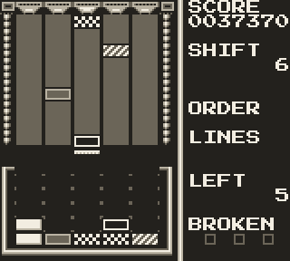
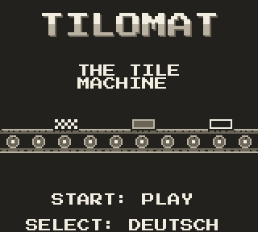
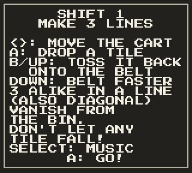
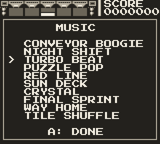
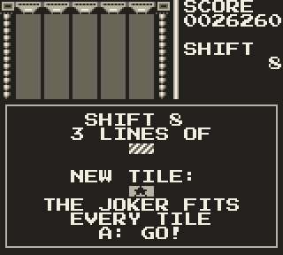
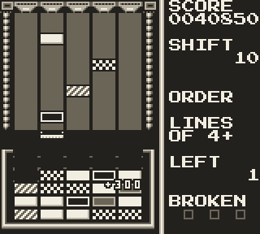
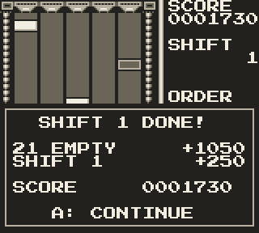
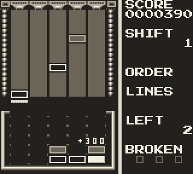
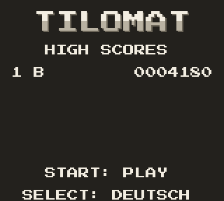

GAME BOY · DMG · NOW ON SHIFT
TILOMAT
The tile machine. Tiles rattle down the belt – catch them with the cart, drop them into the bin and line up three of a kind before the fourth one breaks. A puzzle game for the original Game Boy, running right here.
- 5 lanes
- 6 tiles + joker
- 10 songs
- ∞ shifts
- ←→move the cart
- XKA · drop a tile
- Z↑B · toss it back
- ↓belt faster
- EnterSTART · pause
- ShiftSELECT · music menu in the game, language on the title
The game starts in German – press SELECT on the title screen for English. On a phone, use the buttons of the machine. High scores stay in this browser.
ON SHIFT
Catch. Stack. Line up.
-
Catch
Tiles come out of the machine and slide down five lanes. Park the cart under a lane before a tile reaches the end – a tile that falls off the belt breaks.
-
Stack
The cart holds four tiles. Drop the top one into the bin below, or toss it back up the belt to buy time.
-
Line up
Three or more of a kind – across, up or diagonal – vanish. Tiles above fall down and may line up again: each round of a cascade multiplies the points.
- WHITE
- FRAME
- GRAY
- CHECKS
- STRIPES
- DIAMOND
- JOKER
WORK ORDERS
Every shift has an order.
A shift ends as soon as its order is filled. The orders grow a little every five shifts, the belt gets faster with every one, and new kinds of tile join in – from shift 8 also the joker, a star that fits every kind.
Make a number of lines, any kind, any direction.
Catch a number of tiles from the belt.
Lines of the kind shown on the order.
Score so many points within the shift.
Lines of four or five tiles.
Points
| a caught tile | 10 |
| a line of 3 / 4 / 5 | 100 / 400 / 1000 |
| across · diagonal | × 2 · × 3 |
| each round of a cascade | × 2, × 3, … |
| every empty cell at the end of a shift | 50 |
| the shift itself | 250 × shift |
Breaks
Every tile that falls off the belt goes into the break meter. The fourth break ends the game – but every finished shift replaces one broken tile.
Tip
A tidy bin pays: the bonus for empty cells at the end of a shift is often worth more than a hasty line. And the cart can throw tiles back.
FROM THE FACTORY FLOOR
Screens









TAKE IT HOME
Get it
The ROM
tilomat.gb – runs on the original Game Boy from a flash cartridge and in any good emulator (SameBoy, Gambatte, mGBA, BGB).
- Size
- 64 KB
- Cartridge
- MBC1 + 8 KB RAM, battery
- Saves
- top ten, language, song
The source
C for GBDK-2020; graphics, texts and the ten songs generated by Python scripts; tests that play the game by themselves. All on GitHub.
Build it
With GBDK-2020 4.4 in tools/gbdk and Python with Pillow:
make